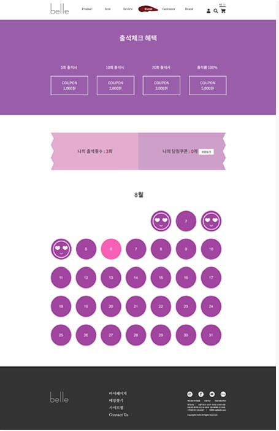

belle
PROJECT INFO
- 타입
- 제작(팀프로젝트)
- 플랫폼 & 디바이스
- PC WEB
- 구현 범위
- Index(black), black, lip, check
- 기여도
- 기획 100%, 디자인 100%, 마크업 100%, jQuery 80%(담당 페이지)
- 사용기술
- HTML5, CSS, jQuery
- 기간
- 05.07 ~ 06.07
01Over View
소비자들을 끌어당길 수 있는 화장품 페이지 제작화장품 브랜드 페이지 제작을 하였습니다. 그 안에서도 두가지 느낌으로 나눠 모든 사람들이 만족할 수 있는 느낌을 주고 싶었습니다.
white 페이지에서는 산뜻하고 깔끔한 느낌 black에서는 강령하고 강조되는 느낌을 주었습니다.



02Detail View
크로스 부라우징과 웹 표준, 접근성을 만족하는 사이트마크업과 jQuery를 이용해서 부족한 접근성 제어


03Design
- Carmine #960018
- Rose Bud #FBB2A3
- Red #ff0000
- Purple Pizzazz #FF00CC
- Blaze Orange #FF6600
- strong(cnt1) - 50px AaBbCcDdEeFfGg
- p(cnt1) - 40px AaBbCcDdEeFfGg
- strong(cnt3) - 35px AaBbCcDdEeFfGg
- ul - 20px AaBbCcDdEeFfGg
- body - 16px AaBbCcDdEeFfGg